简单的说 Node.js 就是运行在服务端的 JavaScript。
Node.js是一个基于 Chrome V8 引擎的 JavaScript 运行环境；
Node.js使用一个事件驱动、非阻塞式 I/O 的模型，使其轻量且高效；
Node.js的软件包生态系统npm是全球最大的开源库生态系统。
本机环境：Windows 7 旗舰版 64bit操作系统
Node.js 官方网站下载：https://nodejs.org/en/download/
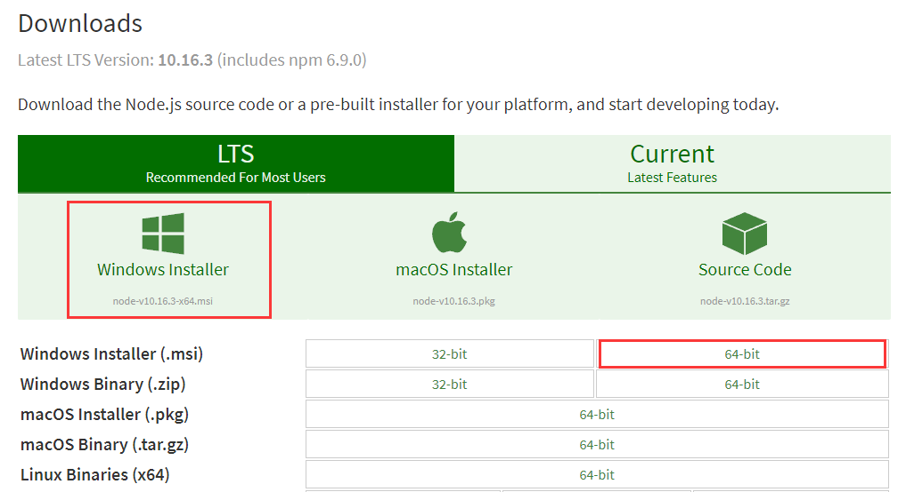
下载完成，安装包如下：
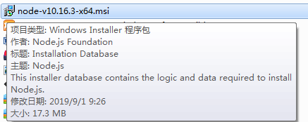
双击打开安装，下一步下一步即可（笔者安装路径为“D:\Program Files\nodejs”）：
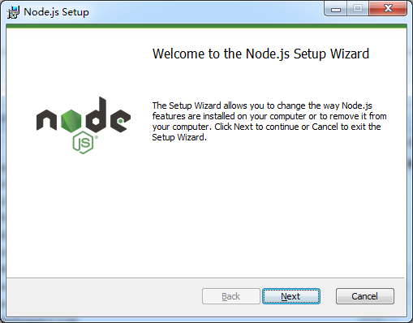
……
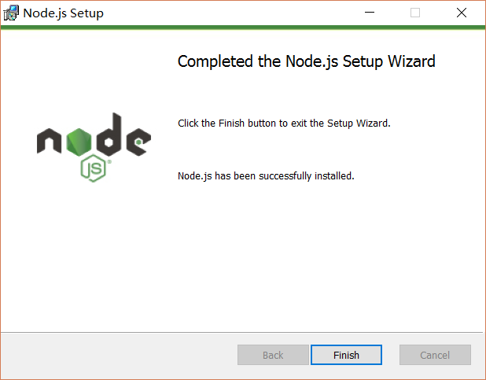
安装成功，测试安装是否成功，运行CMD，分别输入node -v 和 npm -v 分别查看node和npm的版本号，如下图所示：
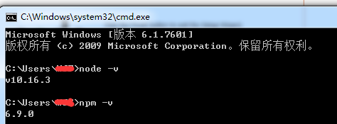
安装完成后系统目录如图所示（其中，npm随安装程序自动安装，作用就是对Node.js依赖的包进行管理）：
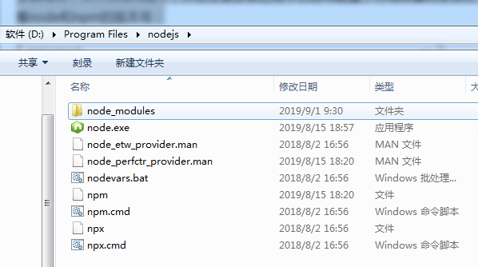
因为在执行例如npm install webpack -g等命令全局安装的时候，默认会将模块安装在C:\Users\用户名\AppData\Roaming路径下的npm和npm_cache中，不方便管理且占用C盘空间，
所以这里配置自定义的全局模块安装目录，在node.js安装目录下新建两个文件夹 node_global和node_cache，如图所示：
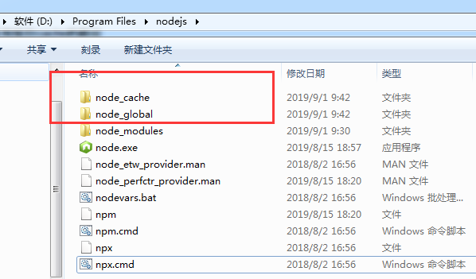
然后在cmd命令下执行如下两个命令：
npm config set prefix "D:\Program Files\nodejs\node_global"
npm config set cache "D:\Program Files\nodejs\node_cache"执行命令，如下图所示：
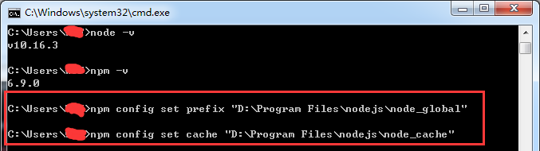
执行完后，配置环境变量，如下：
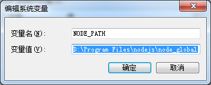
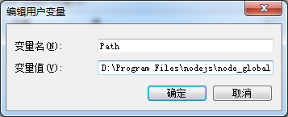
配置完成。
在cmd命令下执行 npm install webpack -g 安装webpack，如下图所示：
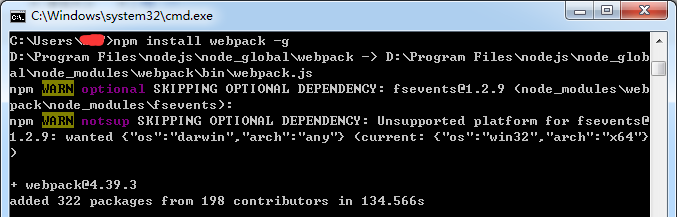
安装成功，自定义文件夹如下所示：
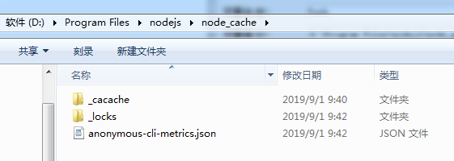
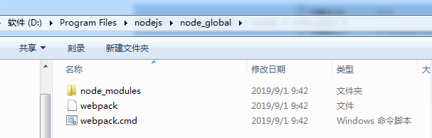
在cmd命令下执行 webpack -v 查看webpack版本，如下图所示：
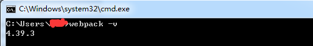
以上node.js的安装，笔者已亲测可用，希望本篇博客对您有所帮助，在安装配置过程中，若遇到问题，欢迎留言交流！